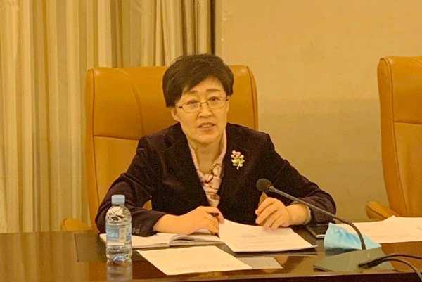

2020年4月10日，农工党赤峰市委会主委李艳茹主持召开农工党赤峰市六届十七次全委扩大会议，市委会委员及各部门、各工作委员会负责人参加会议。
会议传达了农工党中央《关于进一步做好疫情防控宣传思想工作的通知》精神，传达了中共赤峰市委统战部近期召开的民主党派、无党派代表人士工作通报会和党外代表人士建言献策信息工作座谈会精神，通报了中共赤峰市委统战部2020年工作要点，讨论并确定了2020年重点调研课题及调研方向，安排部署了助力脱贫攻坚调研工作、党员培训工作和2020年扶贫计划。

会议传达了农工党中央《关于进一步做好疫情防控宣传思想工作的通知》精神，传达了中共赤峰市委统战部近期召开的民主党派、无党派代表人士工作通报会和党外代表人士建言献策信息工作座谈会精神，通报了中共赤峰市委统战部2020年工作要点，讨论并确定了2020年重点调研课题及调研方向，安排部署了助力脱贫攻坚调研工作、党员培训工作和2020年扶贫计划。